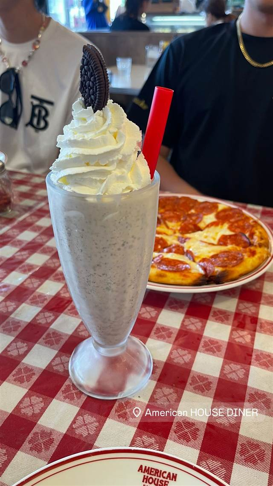

AMERICAN HOUSE DINER 辻堂店
古き良きアメリカ映画のような内装で味わうハンバーガーとピザ
American HOUSE DINER
1978年創業の株式会社アメリカンハウスが手がけるダイナー業態の1店で、辻堂店は2016年7月にオープン。古き良きアメリカ映画さながらの内装とオープンキッチンで、ハンバーガーやパンケーキなどをカジュアルに楽しめる。
TRIVIA
豆知識
- 運営会社アメリカンハウスは1978年創業で、現在は18ブランド・24店舗を展開している
REVIEWS
世間の評判
3.45食べログ
肉厚バーガーとアメリカンな内装
- 肉厚なパティを使った本格バーガーの満足度の高さを評価する声が多い
- アメリカンダイナーらしい内装とソファー席の雰囲気を評価する声が多い
- 写真で見るより実際の量が少なかったと感じる人もいるという声がある
- 週末など混雑する時間帯は待ち時間が発生することがあるという声がある
食べログ 口コミ213件
| 創業 | 2016年7月オープン（運営会社の株式会社アメリカンハウスは1978年創業） |
|---|---|
| 系譜 | 神奈川県横浜市を拠点に18ブランド・24店舗を展開する株式会社アメリカンハウスが運営するダイナー業態の1店 |
| 看板 | ハンバーガー、ステーキ、ハンバーグ、パンケーキ、ピザ |
| こだわり | 古き良きアメリカ映画の世界観を再現した内装に、レトロなポスターやオープンキッチンでカジュアルなダイナー気分を演出 |
| どこから | 東京から1時間ほど |
| 予算 | 昼 ¥1,000～¥1,999 夜 ¥2,000～¥2,999 |
| 定休日 | 無休 |
| 場所 | 辻堂駅徒歩14分 神奈川県藤沢市辻堂6-4-11 |
| メモ | 犬同伴可のテラス席あり、幅広い年代向けの手頃な価格設定 |
食べたもの：シェイクとピザ
OFFICIAL
店からの知らせ
NEARBY
近い店・同じ系統の店
-
 ピザ 飯田橋駅・牛込神楽坂駅
400℃ PIZZA TOKYO
岡山本店直系、4日仕込みの高加水生地で焼く蜂蜜がけピッツァ
夜 ¥10,000～¥14,999
ピザ 飯田橋駅・牛込神楽坂駅
400℃ PIZZA TOKYO
岡山本店直系、4日仕込みの高加水生地で焼く蜂蜜がけピッツァ
夜 ¥10,000～¥14,999
-
 ピザ 恵比寿駅
L'Antica Pizzeria da Michele 恵比寿店
1870年創業のナポリ本店直伝、空輸チーズのマルゲリータ
昼 ¥2,000～¥2,999 夜 ¥4,000～¥4,999
ピザ 恵比寿駅
L'Antica Pizzeria da Michele 恵比寿店
1870年創業のナポリ本店直伝、空輸チーズのマルゲリータ
昼 ¥2,000～¥2,999 夜 ¥4,000～¥4,999
-
 ピザ 神谷町
Pizza 4P's Tokyo
ベトナム発、アジア30店舗超を経て麻布台に上陸した水牛モッツァレラのピザ
昼 ¥3,000～¥3,999 夜 ¥6,000～¥7,999
ピザ 神谷町
Pizza 4P's Tokyo
ベトナム発、アジア30店舗超を経て麻布台に上陸した水牛モッツァレラのピザ
昼 ¥3,000～¥3,999 夜 ¥6,000～¥7,999
-
 ピザ 中目黒駅
聖林館（セイリンカン）
マルゲリータとマリナーラの2種のみ、国産小麦を長期熟成
昼 ¥4,000～¥4,999 夜 ¥4,000～¥4,999
ピザ 中目黒駅
聖林館（セイリンカン）
マルゲリータとマリナーラの2種のみ、国産小麦を長期熟成
昼 ¥4,000～¥4,999 夜 ¥4,000～¥4,999
-
 ピザ 武蔵小山
La TRIPLETTA
開業10カ月でビブグルマンを獲得した本格ナポリピッツァ
夜 ¥4,000～¥4,999
ピザ 武蔵小山
La TRIPLETTA
開業10カ月でビブグルマンを獲得した本格ナポリピッツァ
夜 ¥4,000～¥4,999
-
 ピザ 白金高輪
タランテッラ ダ ルイジ（TARANTELLA da luigi）
マルゲリータ考案者の子孫に師事した店主のナポリピッツァ
昼 ¥1,000～¥1,999 夜 ¥6,000～¥7,999
ピザ 白金高輪
タランテッラ ダ ルイジ（TARANTELLA da luigi）
マルゲリータ考案者の子孫に師事した店主のナポリピッツァ
昼 ¥1,000～¥1,999 夜 ¥6,000～¥7,999